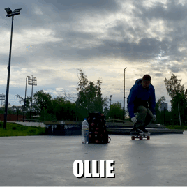

ТРЮКИ НА СКЕЙТБОРДЕ
Одним из самых распространённых направлений в скейтбординге является Стрит (Street) – уличное катание, которое практически не требует никаких специальных площадок и фигур в виде рамп, трамплинов и т.д. Как говорится: «Весь город – спортивная площадка». Используй пространство на своё усмотрение – бордюры, люки, ступеньки, перилы, клумбы, заборчики, урны, порой даже пятачок с хорошим асфальтом – перепрыгивай, балансируй, скользи, делай всё, на что хватит твоего уровня и твоей фантазии. А выбор трюков просто огромен:
- Олли и вращения
- Мэнуалы
- Шовиты
- Флипы
- Скольжения
- Грэбы
- Любой креатив
ОЛЛИ И ВРАЩЕНИЯ
Олли (Ollie) – прыжок на доске, базовый трюк, основа основ, необходимая для понимания почти всего остального арсенала элементов в скейтбординге. Когда впервые в жизни видишь Олли, невольно расцениваешь это как магию. Ведь на доске нет ни ремешков для крепления ног, ни каких-либо скрытых магнитов и уж тем более клея. Но, тем не менее, доска вместе со скейтбордистом стремительно взмывает в воздух, будто прилипшая к ногам. Как же это происходит? Дело в том, что у доски есть два хвоста – Тэйл (Tail) и Ноуз (Nose) – они загнуты кверху и позволяют при резком надавливании на один из них, отщёлкнуть доске от поверхности земли. Это называется щелчок. Для выполнения Олли нужно поставить одну ногу на хвост, а вторую примерно на середину доски. Затем присесть и в момент выпрыгивания одной ногой сделать щелчок по Тэйлу, а второй вовремя подхватить энергию взлетающей вверх доски и тянуть её к Ноузу, переводя скейт из вертикального положения в горизонтальное, не забывая при этом поджать щёлкавшую ногу. Получается что-то наподобие запуска волны. На словах всё довольно просто, но на деле придётся попотеть, чтобы освоить этот элемент. Ведь нужно объединить разом в одно естественное и плавное движение собственный прыжок, щелчок доски, вытягивание её в горизонталь и поджатие ног. Механику Олли можно понять и на обычной школьной линейке, если небольшую её часть свесить с края стола и после резкого нажатия на неё не дать линейке улететь аки стреляющей катапульте, а управлять и контролировать получившимся подскоком. Помимо Олли можно подпрыгнуть и вовсе без доски или же всё-таки поднять её в воздух, но особым способом. Поэтому, приветствуем:
- Хиппи Джамп (Hippie Jump) – тут Олли делать не нужно. Достаточно просто подпрыгнуть с доски и приземлиться обратно на неё. Самый интерес в том, что таким образом можно преодолевать некоторые препятствия, позволяя скейту проехать под ними, а самому лететь над, встречаясь с доской уже после преграды. Действительно, Олли делать не нужно, но можно, как и любой другой трюк. Поэтому, если трюк пролетает под препятствием, а скейтбордист над ним, то в название трюка будет добавлено Хиппи Джамп. Разумеется, никто не запрещает ещё и вращаться скейтбордисту в воздухе, прежде чем приземлиться обратно на доску.
- Ноу Комплай (No Comply) – чтобы выполнить этот прыжок, нужно одновременно с щелчком, или за доли секунды до него, убрать выводящую ногу с доски на землю, одновременно с этим щёлкающей ногой вытягивая Олли, а второй отталкиваясь от земли. Разумеется, засчитать трюк можно, если скейтбордист приземлится обеими ногами на доску и поедет. Заметно популярнее этот трюк в связке с Ванэйти. Помимо Олли, механику Ноу Комплая можно использовать и для более сложных трюков.
Но вернёмся всё же к Олли. Как и любой другой трюк, его можно сделать в своей стойке как двигаясь вперёд, так и двигаясь назад. А ещё его можно сделать не в своей стойке и так же в двух направлениях движения. Отсюда имеем уже трюковые стойки: Своя – тут всё просто, зависит от того Гуфи ты или Регуляр. Едем вперёд. Своя нога спереди. Щёлкаем задней ногой. Тянем трюк передней ногой. Фэйки (Fakie) – стоим на доске всё так же в своей стойке, но едем не вперёд, а назад. Щёлкаем, получается, с передней части доски. Технически, это своя стойка, только едем в другую сторону. Всё равно, что правша писал бы правой рукой, но задом наперёд. Усложняет выполнение трюка. Ведь хотя щёлкает и вытягивает каждая привычная нога, ехать приходится не «своей» ногой вперёд. Свич (Switch) – когда Гуфи выполняет трюк в стойке Регуляра, или Регуляр выполняет трюк в Гуфи – это Свич. Примерно, как правша будет писать левой рукой, а левша – правой. Значительно усложняет выполнение трюка. Нолли (Nollie) – едем своей ногой вперёд, но щёлкать будем не с Тэйла и не привычной ногой, а с передней части доски. Получается, ехать удобно, потому что своей ногой вперёд, а вот выполнение трюка происходит в Свиче, потому что щёлкать и вытягивать будут ноги не своей стойки.